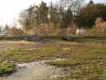
En ce week-end hivernal, petite conviviale Ile-de-France du CVCF. Grand beau temps, du vent assez mais pas trop, que demande le peuple ? Euh, quelques degrés, ça serait bien... La surface est très belle, grande, dégagée, en haut de colline, dominant tout Paris, avec vue sur la Tour Eiffel, le Sacré-Coeur et tout !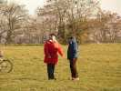
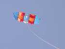
François sort son Wasseige de bien 3 m qu'il vient de réaliser à l'atelier breton, c'est son premier vol et il marche fort. Faudra les 2 mains s'il y a du vent, François !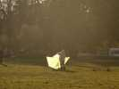
Sylvien sort son dernier Jessica 12, celui qui n'a pas de trous ni de modifications tous les 5 cm !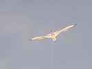
Moi, je monte mon Albatros2 avec la dernière modif, la bride transversale (comme sur le premier, je ne voulais pas mais c'est quand même drôlement efficace pour ce CV). Vol OK, sauf canne qui se télescope en vol et recherche dans un jardin voisin...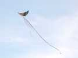
Emmanuel est là aussi, avec madame et avec ses innombrables chats... Ces derniers volent bien, et on peut jongler avec si on les secoue un peu...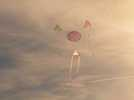
Il a aussi des cerfs-volants non-chats, comme cette structure légère et aérienne ...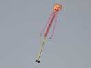
...ou ce bonhomme longiligne et ondulant... Il fera aussi voler des circoflex allongés à base de sacs plastiques transparents et colorés et de baguettes de stores.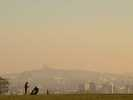
Jean-François Caraffini est là aussi, avec un cerf-volant noir comme d'hab. Le Sacré-Coeur s'en voile la face...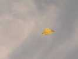
Le GO Eric est présent, évidemment, mais son réveil n'a pas sonné...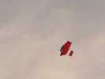
Un beau petit Plano rouge aussi, je ne sais pas à qui, sans doute à George qui n'a pas manqué le rendez-vous ?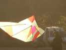
Des cervolistes arrivent encore, avec entre autres un Jessica 12 rouge qu'on l'aide à régler, et ce J14 plus haut en couleurs...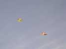
Le J14 vole d'abord avec le J12 de Sylvien pour se rassurer...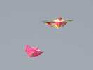
...puis avec le rouge qu'on a réglé. Vol OK, impeccable.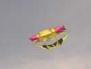
Manuel est arrivé aussi, il a lancé son porteur, descendant d'un Faga modifié façon Dopéro mais le vent est un peu juste...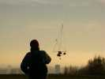
La nacelle avec suspension a bien du mal à s'élever, pourtant l'appareil n'est pas gros... En plus Albatros2 le fera tomber ou l'inverse, je ne sais pas, je prenais des photos ! Mais j'ai pu sauver son matos avant qu'il ne touche le sol...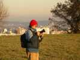
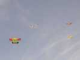
Finalement, on a bien volé toute la journée.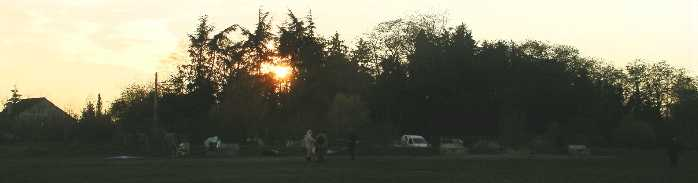